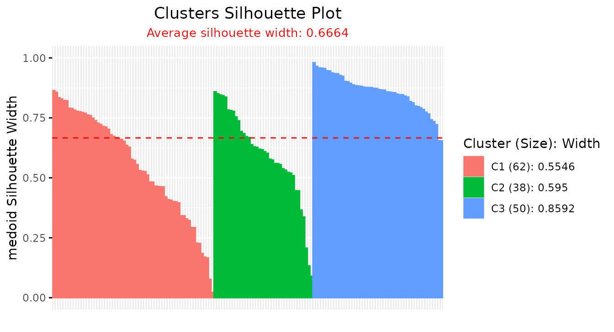
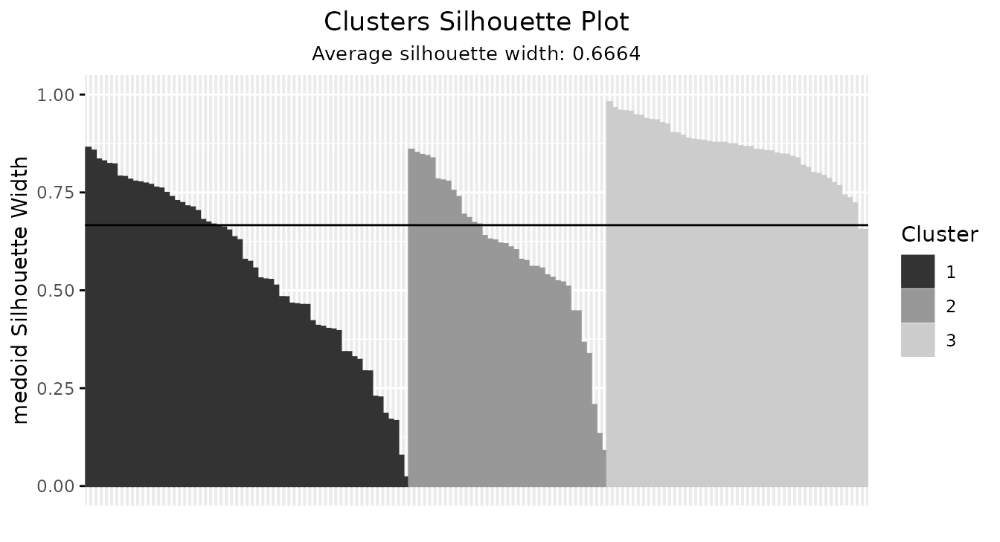
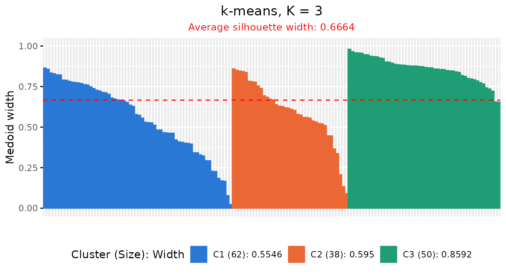
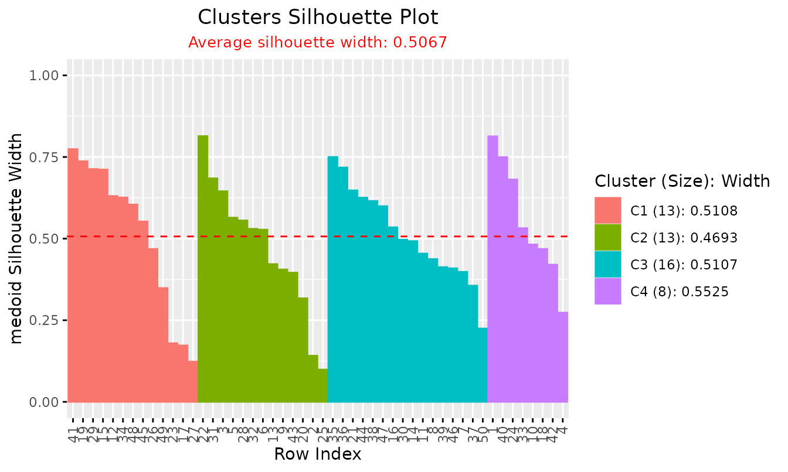
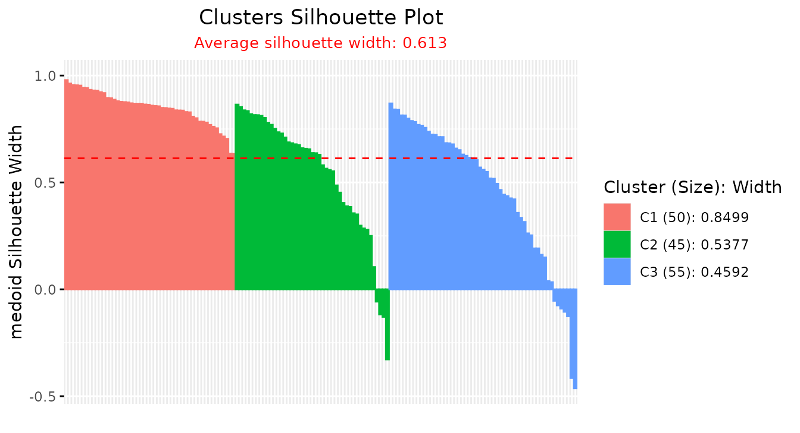
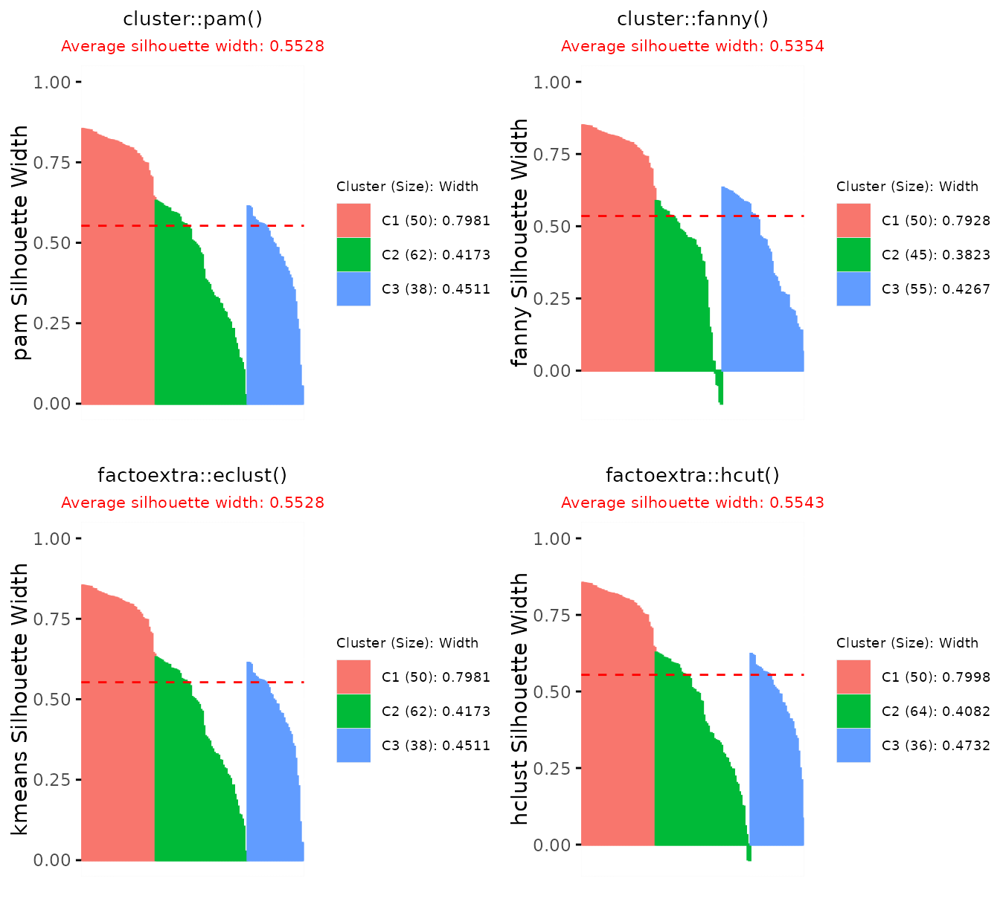
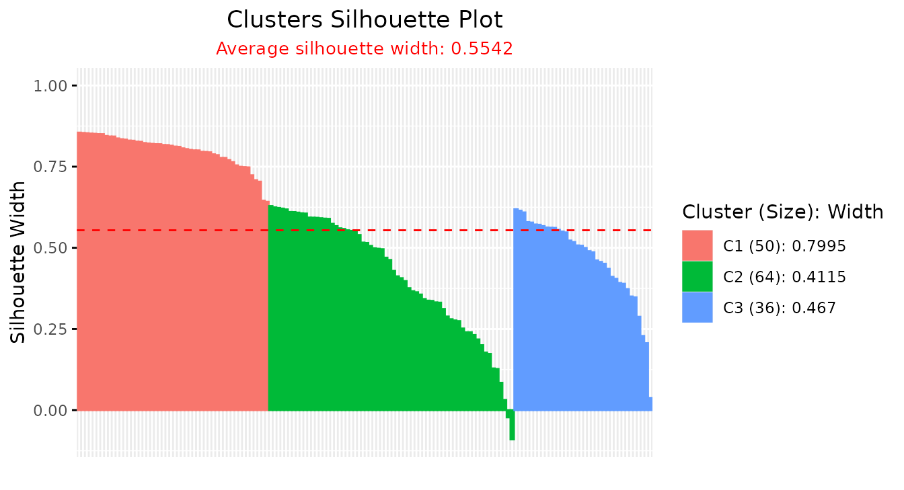
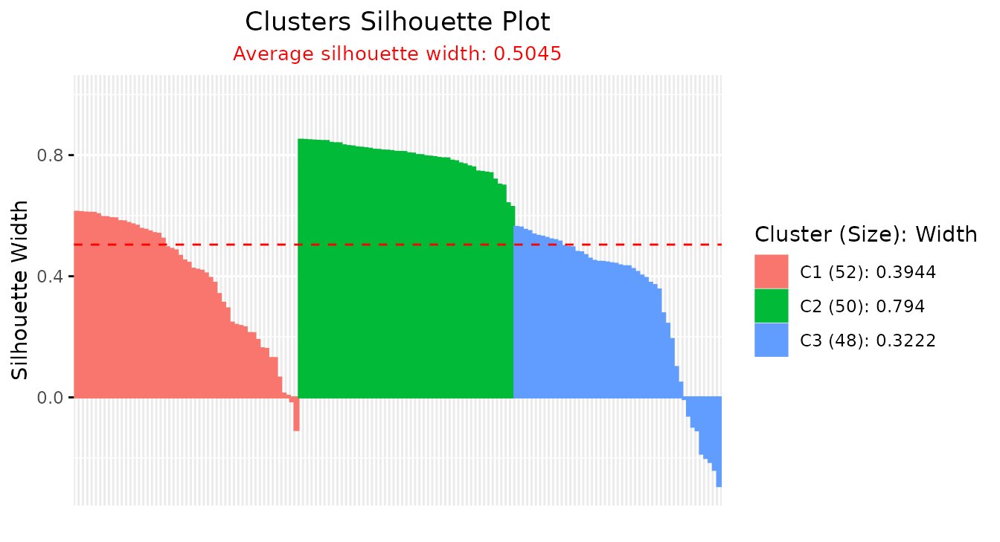
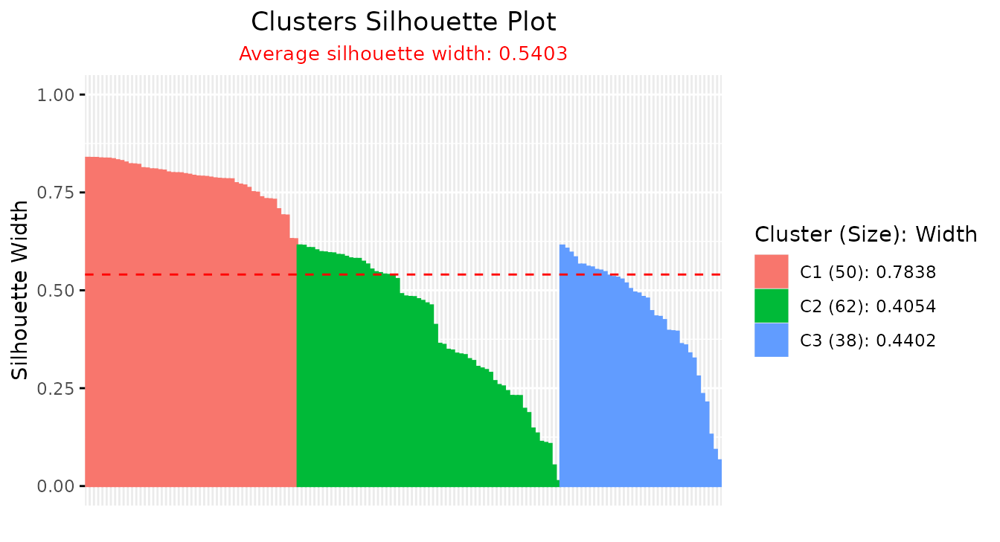

A silhouette plot (Rousseeuw 1987)
draws one bar per observation, grouped by cluster and sorted by width
within each cluster, with the average width marked.
plotSilhouette() draws it for any "Silhouette"
object and for the silhouette results of cluster (Maechler et al. 2023),
factoextra (Kassambara and Mundt
2020) and drclust (Prunila and Vichi 2025). It returns a
ggplot2 object, so the plot can be changed and saved
like any other.
library(Silhouette)
X <- as.matrix(iris[, 1:4])
set.seed(1)
km <- kmeans(X, centers = 3, nstart = 20)
sil <- Silhouette(proxy::dist(X, km$centers))The default plot
plot() on a "Silhouette" object calls
plotSilhouette(), so the two lines below draw the same
plot.
plot(sil)
# plotSilhouette(sil)The legend gives each cluster’s size and average width, the subtitle
gives the overall average, and the dashed line marks it. The axis title
names the width (medoid here). When the object was computed
with average = "fuzzy" or average = "median",
the subtitle says so and the line marks that average; the bars always
show the individual widths.
Options
summary.legend = FALSE reduces the legend to the cluster
numbers, grayscale = TRUE switches to gray bars and a black
line for print, and linetype changes the line.
plotSilhouette(sil, summary.legend = FALSE, grayscale = TRUE, linetype = "solid")
Any further argument goes to ggpubr::ggpar(), which sets
titles, axis labels, the legend position, the color palette, font sizes
and the theme:
plotSilhouette(sil,
title = "k-means, K = 3", ylab = "Medoid width",
legend = "bottom", palette = c("#2a78d6", "#eb6834", "#1f9d74"))
The palette colors the clusters and the summary legend is kept. With
grayscale = TRUE the palette is ignored.
Because the result is a ggplot, layers and themes can also be added
with +, and ggplot2::ggsave() saves it to a
file:
p <- plotSilhouette(sil) + ggplot2::theme(legend.position = "top")
ggplot2::ggsave("silhouette.pdf", p, width = 7, height = 4)Finding the poorly placed observations
With label = TRUE the bars are labeled with the row
index of each observation. This is readable for up to about 50
observations. For the USArrests data, with four k-means
clusters of the standardized crime rates:
Xu <- scale(USArrests)
set.seed(1)
km_us <- kmeans(Xu, centers = 4, nstart = 20)
sil_us <- Silhouette(proxy::dist(Xu, km_us$centers))
plotSilhouette(sil_us, label = TRUE)
The object keeps the rows in the order of the data, so the widths can be matched back to the observations directly:
rownames(USArrests)[sil_us$sil_width < 0.2]
#> [1] "Alaska" "Kentucky" "Minnesota" "Missouri" "Nebraska"Negative widths
When the labels come from a membership matrix passed as
prob_matrix, or from the cluster argument, an
observation whose assigned cluster is not its nearest cluster center
gets a negative width, and its bar points downward. For a Gaussian
mixture of the iris data, scored against the component means:
suppressPackageStartupMessages(library(mclust))
gm <- Mclust(X, G = 3, verbose = FALSE)
sil_gm <- Silhouette(proxy::dist(X, t(gm$parameters$mean)), prob_matrix = gm$z)
plotSilhouette(sil_gm)
These are the observations on which the mixture and the geometry
disagree; see
vignette("interpreting-widths", package = "Silhouette").
Results from other packages
plotSilhouette() also draws the silhouette results of
partitioning around medoids and its relatives in
cluster (pam(), clara(),
fanny() and silhouette()), of
eclust() and hcut() in
factoextra, and of silhouette() in
drclust. These packages compute the classical widths
from all pairwise distances; plotSilhouette() only draws
them. Call plotSilhouette() explicitly for these objects,
because plot() dispatches to the methods of the package
that created them.
pm <- cluster::pam(X, k = 3)
fy <- cluster::fanny(X, k = 3)
ec <- factoextra::eclust(X, "kmeans", k = 3, graph = FALSE)
hc <- factoextra::hcut(X, k = 3)
small <- function(x, title) plotSilhouette(x, title = title, font.title = 10,
font.subtitle = 8, font.legend = 7)
ggpubr::ggarrange(
small(pm, "cluster::pam()"),
small(fy, "cluster::fanny()"),
small(ec, "factoextra::eclust()"),
small(hc, "factoextra::hcut()"),
ncol = 2, nrow = 2)
For fanny(), the widths are those of the crisp partition
obtained by assigning each observation to its cluster of largest
membership. The same holds for objects returned by
cluster::silhouette(), for example for a hierarchical
clustering:
hc_avg <- cutree(hclust(dist(X), method = "average"), k = 3)
plotSilhouette(cluster::silhouette(hc_avg, dist(X)))
In drclust, silhouette() takes the data
and a fitted model, such as the reduced k-means of dpcakm()
with \(K\) clusters in \(Q\) components, and returns the classical
widths in component cl.silhouette:
set.seed(1)
dp <- drclust::dpcakm(X, K = 3, Q = 2)
d <- drclust::silhouette(X, dp)
#> cluster size ave.sil.width
#> 1 1 52 0.39
#> 2 2 50 0.79
#> 3 3 48 0.32
plotSilhouette(d$cl.silhouette)
drclust::silhouette() prints a summary table when it is
called; the drclust package also masks
cluster::silhouette() when it is attached, so the calls
above use ::.
Widths computed elsewhere
getSilhouette() builds a "Silhouette"
object from widths computed by any other means, so that
summary() and plot() work on them. It needs
the assigned cluster, the neighboring cluster and the width of every
observation; weight is needed only for fuzzy averaging.
is.Silhouette() checks the result, and with
strict = TRUE also its columns and attributes.
For example, approxSilhouette() in the Bioconductor
package bluster (Lun
2023) approximates the classical widths of a crisp partition in
linear time and returns them as a DataFrame:
a <- bluster::approxSilhouette(X, pm$clustering)
sil_bl <- getSilhouette(cluster = as.integer(a$cluster),
neighbor = as.integer(a$other),
sil_width = a$width)
is.Silhouette(sil_bl, strict = TRUE)
#> [1] TRUE
summary(sil_bl, print.summary = FALSE)$avg.width
#> [1] 0.5403281
plotSilhouette(sil_bl)
The same pattern works for widths computed in other software and read into R.
Session information
sessionInfo()
#> R version 4.6.2 (2026-10-29)
#> Platform: x86_64-pc-linux-gnu
#> Running under: Ubuntu 26.04.1 LTS
#>
#> Matrix products: default
#> BLAS: /usr/lib/x86_64-linux-gnu/openblas-pthread/libblas.so.3
#> LAPACK: /usr/lib/x86_64-linux-gnu/openblas-pthread/libopenblasp-r0.3.32.so; LAPACK version 3.12.0
#>
#> locale:
#> [1] LC_CTYPE=C.UTF-8 LC_NUMERIC=C LC_TIME=C.UTF-8
#> [4] LC_COLLATE=C.UTF-8 LC_MONETARY=C.UTF-8 LC_MESSAGES=C.UTF-8
#> [7] LC_PAPER=C.UTF-8 LC_NAME=C LC_ADDRESS=C
#> [10] LC_TELEPHONE=C LC_MEASUREMENT=C.UTF-8 LC_IDENTIFICATION=C
#>
#> time zone: UTC
#> tzcode source: system (glibc)
#>
#> attached base packages:
#> [1] stats graphics grDevices utils datasets methods base
#>
#> other attached packages:
#> [1] mclust_6.1.3 Silhouette_0.9.7
#>
#> loaded via a namespace (and not attached):
#> [1] gtable_0.3.6 xfun_0.62 bslib_0.12.0
#> [4] ggplot2_4.0.4 htmlwidgets_1.6.4 ggrepel_0.9.8
#> [7] rstatix_1.1.0 lattice_0.23-1 vctrs_0.7.3
#> [10] tools_4.6.2 generics_0.1.4 stats4_4.6.2
#> [13] flexmix_2.3-21 parallel_4.6.2 tibble_3.3.1
#> [16] proxy_0.4-29 DEoptimR_1.2-2 cluster_2.1.8.3
#> [19] BiocNeighbors_2.6.0 pkgconfig_2.0.3 Matrix_1.7-6
#> [22] pheatmap_1.0.13 RColorBrewer_1.1-3 S4Vectors_0.50.3
#> [25] S7_0.2.2 desc_1.4.3 lifecycle_1.0.5
#> [28] factoextra_2.2.0 compiler_4.6.2 farver_2.1.2
#> [31] textshaping_1.0.5 bluster_1.22.0 codetools_0.2-20
#> [34] carData_3.0-6 htmltools_0.5.9 class_7.3-24
#> [37] sass_0.4.10 yaml_2.3.12 Formula_1.2-6
#> [40] pillar_1.11.1 pkgdown_2.2.1 car_3.1-5
#> [43] ggpubr_1.0.0 jquerylib_0.1.4 tidyr_1.3.2
#> [46] prabclus_2.3-5 MASS_7.3-66 BiocParallel_1.46.0
#> [49] diptest_0.77-2 cachem_1.1.0 fpc_2.2-15
#> [52] abind_1.4-8 robustbase_0.99-7 tidyselect_1.2.1
#> [55] drclust_0.1.1 digest_0.6.39 dplyr_1.2.1
#> [58] kernlab_0.9-33 purrr_1.2.2 labeling_0.4.3
#> [61] RcppArmadillo_15.6.2-1 cowplot_1.2.0 fastmap_1.2.0
#> [64] grid_4.6.2 cli_3.6.6 magrittr_2.0.5
#> [67] broom_1.0.13 withr_3.0.3 scales_1.4.0
#> [70] backports_1.5.1 rmarkdown_2.32 igraph_2.3.4
#> [73] otel_0.3.0 nnet_7.3-21 ggsignif_0.6.4
#> [76] ragg_1.5.2 modeltools_0.2-25 evaluate_1.0.5
#> [79] knitr_1.52 rlang_1.3.0 Rcpp_1.1.2
#> [82] glue_1.8.1 BiocGenerics_0.58.1 jsonlite_2.0.0
#> [85] R6_2.6.1 systemfonts_1.3.2 fs_2.1.0